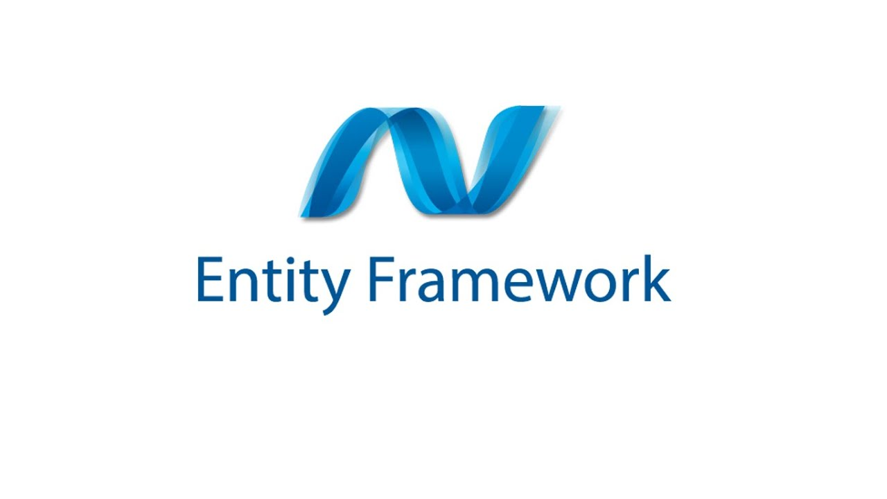
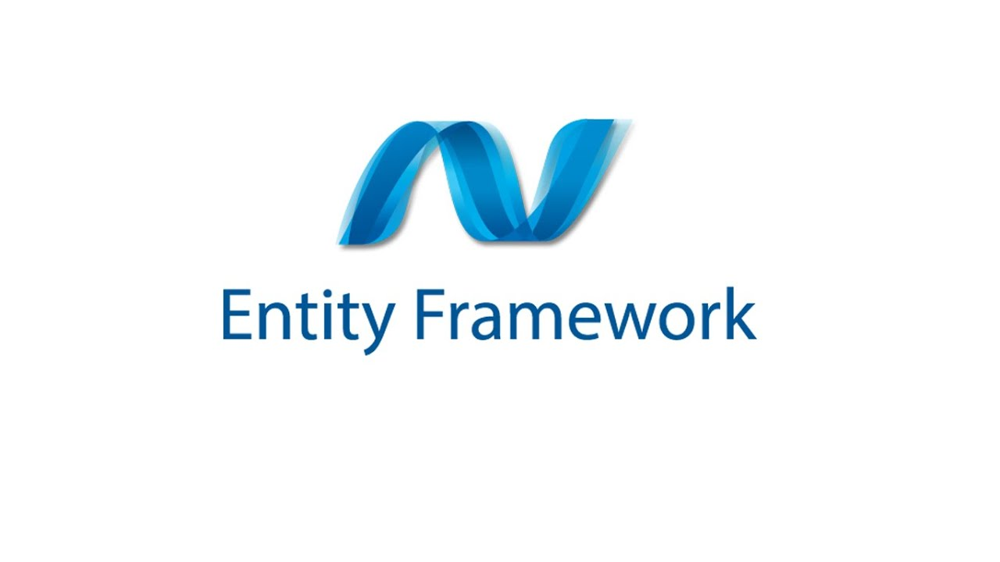

<О языке>
С# – это объектно-ориентированный язык программирования. Он был создан в период с 1998 по 2002 год командой инженеров Microsoft под руководством Андерса Хейлсберга и Скотта Вильтаумота.
С# популярен за счет своей «простоты». Простоты для современных программистов и больших команд разработчиков, чтобы те могли в сжатые сроки создавать функциональные и производительные приложения. Этому способствуют нетипичные конструкции языка и специфичный синтаксис, помогающий максимально органично реализовать намеченные функции.
Интересный факт
Есть две основных версии, зачем Microsoft стала делать свой язык
программирования.
Официальная:
чтобы упростить разработку приложений под Windows. А то языки в то
время были сложные и плохо адаптировались под разные
Windows-компьютеры.
Правдоподобная:
чтобы заменить Java, на который у Microsoft не было лицензии. В итоге
получился почти такой же язык, но с интеграцией под Windows. Как и
Java, он основан на языке C и легко запускается на любом устройстве. А
название «Си» с решёткой как бы говорит: «У нас тут не копия Java, а
новый язык в линейке „Си“».
<Использование C#>
Плюсы
- ✔️Независимость от аппаратного функционала. Программу не нужно адаптировать под многочисленные платформы и операционные системы. Виртуальная машина .NET Framework сама выполняет эту задачу. В конечном итоге программист может использовать один и тот же код на самых разных устройствах: смартфонах, компьютерах, серверах, банкоматах, умных часах и т.д.
- ✔️Поддержка. Данный язык был создан компанией Microsoft. Именно поэтому C# лучше всего подходит для работы с экосистемой Windows.
- ✔️Синтаксический сахар. Используя С#, вы сможете сократить код без вреда для логики программы. Для этого нужно применить один из нескольких способов, которые принято называть «синтаксическим сахаром». Данные приемы позволяют сделать код более легким и понятным. Для наглядности посмотрите на сложение чисел с «сахаром» и без. Однако эти способы не следует применять на постоянной основе. В противном случае может развиться так называемый синтаксический диабет, при котором код будет слишком зашифрован.
Минусы
- ❌Невысокая скорость. При открытии программы на C#код сначала адаптируется под конкретное аппаратное обеспечение, а уже потом исполняется. Таким образом, скорость загрузки становится значительно ниже. При первом запуске интерфейсы на базе С# могут даже подтормаживать.
- ❌Безопасность. Специалисты считают, что код, написанный на C#, очень просто декомпилировать (перевести из машинного языка в человеческий). Следовательно, программу без труда может прочитать хакер, чтобы написать вредоносный софт, или конкурент, чтобы скопировать фрагменты и изучить недостатки программы.
- ❌Слабое взаимодействие с железом. С#является высокоуровневым языком, поэтому он редко используется для разработки, предполагающей полное взаимодействие с железом (игровые движки, операционные системы, авиационный софт и т.д.). Вышеупомянутая Unity написана на языке низкого уровня C++.
<Что делает С# особенным?>
C# имеет синтаксис, поxожий на C, и в этом отношении он близок к C++ и Java. В качестве объектно-ориентированного языка C# унаследовал многое от Java и C++. Как и Java, C# изначально был разработан для веб-приложений, и около 75% его синтаксических возможностей схожи с Java. C# также называют «очищенной версией Java». Еще 10% возможностей он заимствовал у C++, а 5% — у Visual Basic.Оставшиеся 10% — это уникальные идеи разработчиков. Благодаря объектно-ориентированному подходу C# позволяет создавать крупные, но гибкие, масштабируемые и расширяемые приложения.
C# продолжает удерживать свою позицию в рейтинге наиболее востребованных языков программирования на рынке разработки. Начиная с интереса разработчиков для платформы Windows, C# расширил свою сферу применения и научился работать на различных операционных системах, таких как Mac OS, Linux, iOS и Android. Открытый доступ к коду платформы также позволил снять большинство ограничений на использование C#, что привело к активному развитию и расширению его применения. Он рекомендуется как один из основных языков для разработчиков в любой области.
<Помощники C#>
 

<Итог>
✔️Если вы ищете язык для старта в программировании, обязательно рассмотрите С# — он популярен, широко распространён и официально поддерживается Microsoft. Его используют тысячи компаний, поэтому новичок может довольно быстро получить оффер. Особенно понравится язык тем, кто хочет делать 3D-графику на Unity или писать программы для Windows.
<Полезные материалы>
-
🖥️Tutorials Teacher
Tutorials Teacher - популярный образовательный портал, которое включает в себя бесплатные учебные пособия с уроками как для начинающих, так и профессионалов.
-
🖥️C# Station
C# Station предлагает текстовые уроки для начинающих и профессиональных программистов для обучения концепциям программирования на C#.
-
🖥️tutorialspoint
Популярный онлайн-ресурс для обучения, включающий 2 учебника по C#: один для начинающих, а другой для более продвинутых программистов.
-
🖥️LearnCS
Веб-сайт, посвященный исключительно онлайн-урокам по изучению C#. Студенты могут следовать инструкциям и учиться одновременно, используя два отдельных окна: окно кода и окно вывода.
-
🖥️Deccansoft
Серия учебных пособий охватывает почти все темы C# с нуля. Каждая концепция подробно объясняется с использованием различных пошаговых руководств и практических подходов.